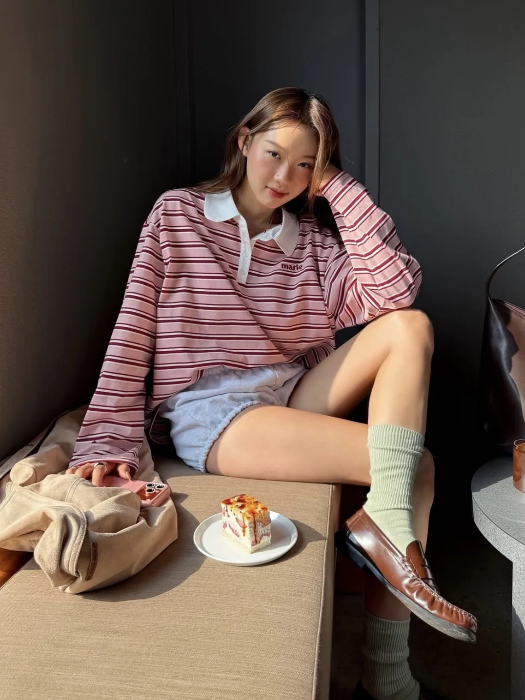
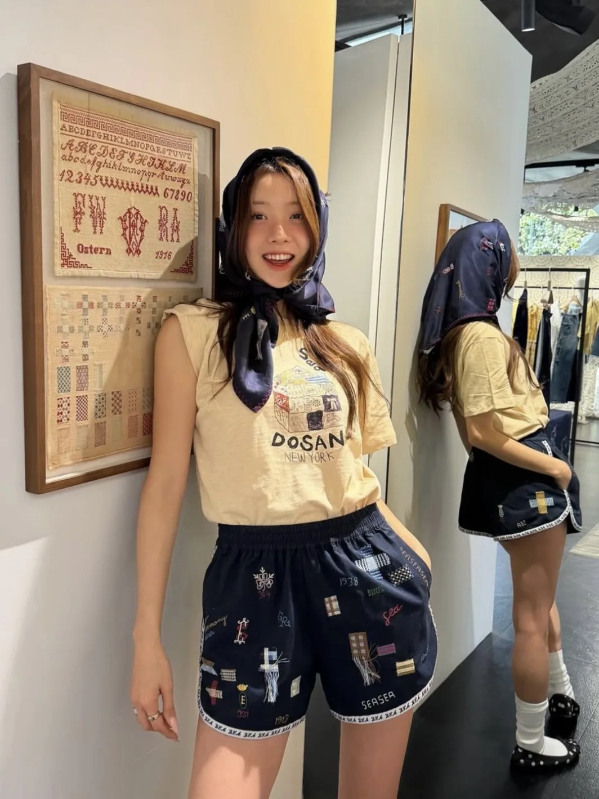
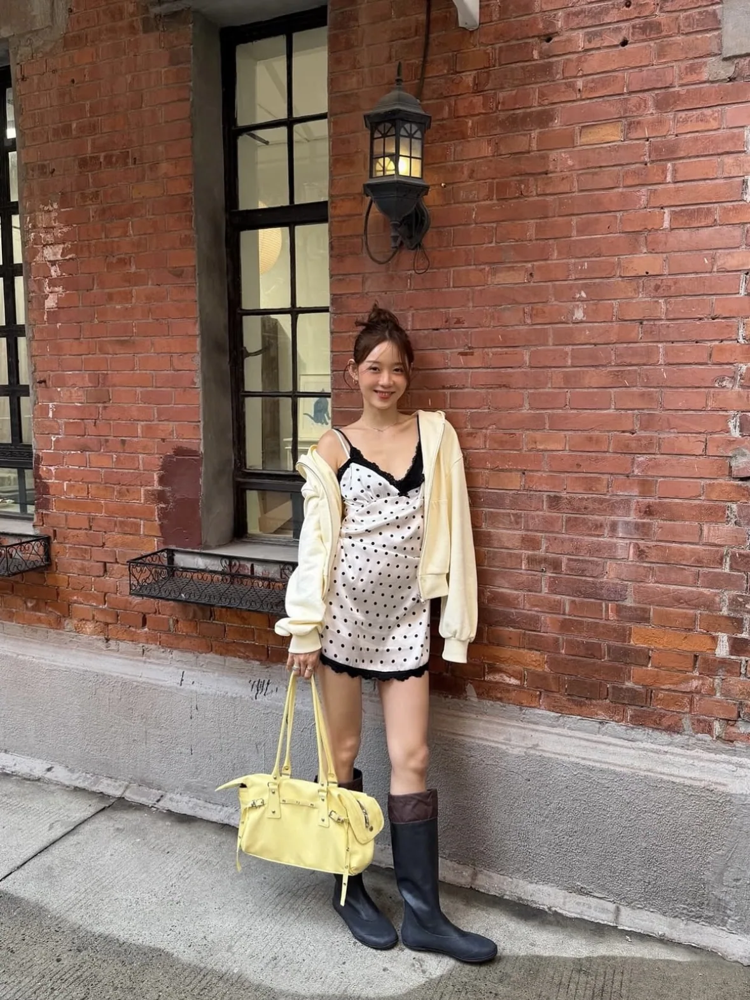
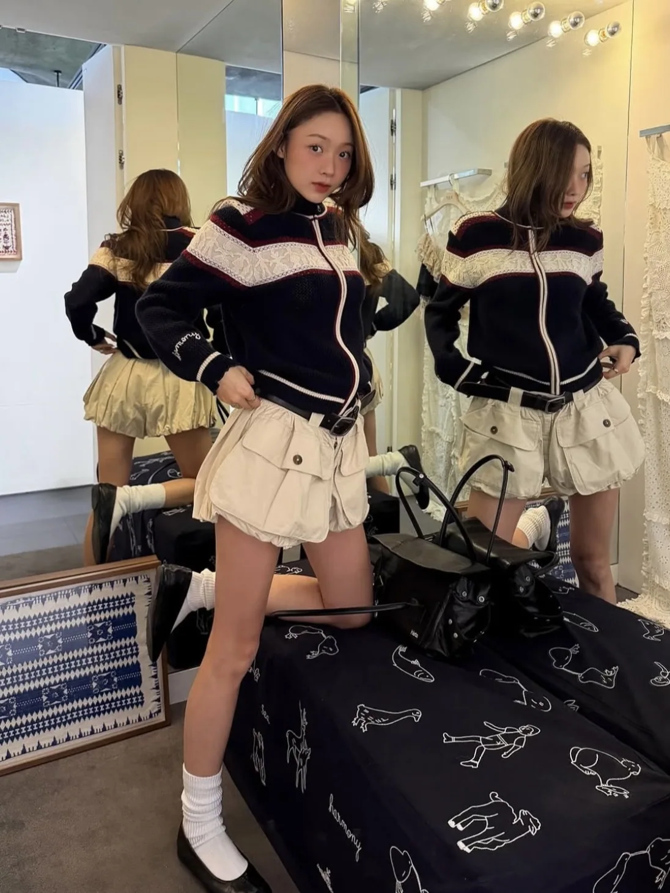

TOPBOTTOM
FROM SAVED INSPIRATION TO TODAY'S LOOK
今天去哪，就穿成什么样。
把平时喜欢的穿搭图存进灵感衣橱。出门前告诉 AI 你要去哪里，它会理解你的偏好，并推荐一套今天可以照着穿的搭配。
- 01存下喜欢的图建立属于你的穿搭审美库
- 02选择今天的场景喝咖啡、通勤、约会或周末
- 03自由替换单品保留上装，换一条裤子继续试



+ 24 SAVEDFROM SAVED INSPIRATION TO TODAY'S LOOK
把平时喜欢的穿搭图存进灵感衣橱。出门前告诉 AI 你要去哪里，它会理解你的偏好，并推荐一套今天可以照着穿的搭配。



+ 24 SAVED上传一张正面全身照，AI 将实时识别身形比例，创建你的个人试穿白模。
照片仅用于本次身形识别，不公开展示
AI 正在根据 27 张收藏图搭配19°C · 室内外 · 轻松但有造型感
复古条纹、灰色短裤与棕色乐福鞋，适合悠闲的下午咖啡。

AI GENERATED · FULL LOOK